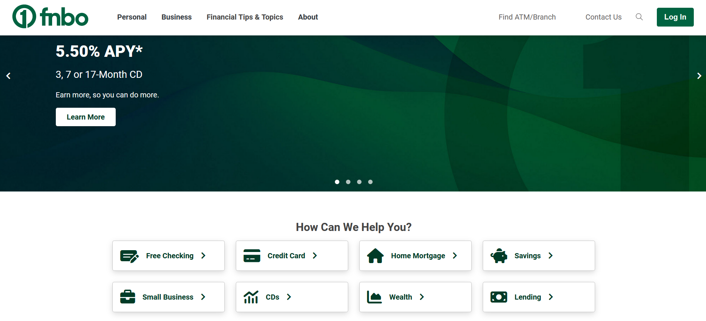

Colors Workshop

"If you dislike orange... You prefer a few genuine close friends to a large
circle of acquaintances, and once you make a friend, that person is your friend forever (Eiseman 180)."
This is quite the bold statement, and the book is riddled with these bold statements for each color.
I'm not saying these statements are wrong, just a little outlandish without any supporting evidence.
Eiseman, L. (2017). The complete color harmony: Expert color information for professional results (Pantone edition). Rockport Publishers.
Green is a Trustworthy Color
If you like green, you are a "...caring companion, a loyal friend, partner, and family member and are supersensitive
about doing the right thing and embracing a cause you feel is right (Eiseman 183)." While green is often times
associated with nature and growth, it has this trustworthiness rooted in human psychology, so I decided to look at some examples
of companies who use green as a primary color for their interfaces.
For good reason, many of them are banks. If more proof is necessary to backup the claim of green being trustworthy,
go to the people who stand to make money from it.
FNBO (the bank)
Notice anything about the bank home page? Look at the colors, anything? There is green. Everywhere. This is a simple example that encapsulates the material covered in this section. A bank is supposed to be a trustworthy ally - a caring companion, a loyal friend, or a partner that you can rely on to keep you (or in this case your stuff) safe.